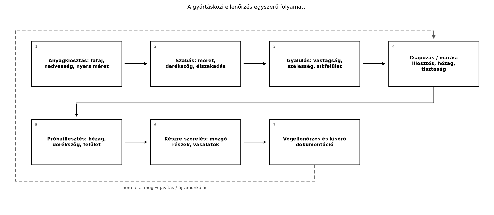

Vevői reklamáció: a legyártott konyhaszekrény ajtaja nem záródik, mert a korpusz egyik oldala 2 mm-rel hosszabb, a fiók pedig szorul a vezetőben. Az asztalos nem tudja, hol hibázott, mert a szabásjegyzék szerint dolgozott, és a végellenőrzésnél csak ránézett a termékre. A minőségbiztosítás és a gyártásközi ellenőrzés éppen az ilyen helyzeteket előzi meg: minden munkafázisban megméri, rögzíti és ellenőrzi az alkatrészek méreteit és illesztéseit, mielőtt továbbhaladna.
Szemléletes kép: a műhelyben a polclap szabása után az asztalos acélvonalzót és derékszögelőt tesz a lapra, majd a mérési eredményt beírja egy papír alapú ellenőrzőlapra. Ugyanezt megismétli a gyalulás, a csapozás és a felületkezelés után is. Így nem a végén derül ki a hiba, hanem ott, ahol keletkezett.

A diagram a faipari gyártás jellemző ellenőrzési pontjait mutatja. Nem minden gyártmány igényli mind a hét pontot, de a lánc logikája azonos: mérj hamar, javíts olcsóbban, dokumentálj.
Definíció. A minőség egy termék vagy szolgáltatás azon tulajdonságainak összessége, amelyek alkalmassá teszik a meghatározott és elvárt igények kielégítésére. A faiparban ez általában a méretpontosságot, a derékszögűséget, a felületminőséget, az illesztések pontosságát, a szerkezeti szilárdságot és a bevonat tartósságát jelenti.
Definíció. A minőségbiztosítás a gyártás során alkalmazott tervezett és rendszeres tevékenységek összessége, amelyek biztosítják, hogy a termék megfeleljen a minőségi követelményeknek. Nem utólagos válogatást jelent, hanem beépített ellenőrzési pontokat a folyamatba.
Definíció. A minőségirányítás a szervezet irányításának az a része, amely a minőségpolitikát, a minőségcélokat, a felelősségeket és a folyamatokat kezeli. Az ISO 9001 szabvány szerinti minőségirányítási rendszer ezt formalizálja.
Szabály. A gyártásközi ellenőrzés minden olyan mérés, vizsgálat vagy szemrevételezés, amelyet az alkatrész vagy a termék készítése közben, az egyes műveletek után végzünk. Célja, hogy a hibát abban a fázisban találja meg, ahol még gazdaságosan javítható. A végellenőrzés a kész termék átadás előtti ellenőrzése, amely dönt a kiszállíthatóságról vagy javításról.
Szabály. A kísérő dokumentáció azokat a dokumentumokat jelenti, amelyek a terméket a gyártástól a vevőig kísérik, és tartalmazzák a termék megfelelőségére, használatára, szerelésére és karbantartására vonatkozó lényeges információkat. Része lehet műszaki leírás, használati útmutató, teljesítménynyilatkozat (építési terméknél), szállítólevél, számla, garanciajegy és vevőszolgálati elérhetőség.
Definíció. A tűrés egy névleges méret megengedett eltérése. Például a névleges hossz 800 mm, a tűrés , így a megfelelő darab mérete 799,0 mm és 801,0 mm között lehet. A tűrést mindig a termék, a vasalat és a felhasználási hely határozza meg; a könyvben szereplő értékek tájékoztató jellegűek.
Szabály. A mérőeszköz felbontása legfeljebb a tűrésmező tizede–ötöde legyen (tájékoztató). A mérőszalag 1 mm-es osztásával és kb. ±0,5 mm leolvasási bizonytalanságával ±1 mm vagy lazább tűrés ellenőrizhető; ±0,5 mm-nél szigorúbb tűréshez tolómérő, mérőléc ütközővel vagy digitális mérőeszköz kell.
Megjegyzés. A faiparban a tűréseket befolyásolja a fa nedvességváltozása. A zsugorodás és dagadás miatt a méret nem állandó, ezért a műhelyben szokásos tűrések gyakran lazábbak, mint a fémiparban. Ugyanakkor a vasalat és a fiókvezető megköveteli a pontos illesztést.
Szabvány. A minőségirányítási rendszerek követelményeit az ISO 9001 szabvány írja le, amelyet Európában és Magyarországon általában MSZ EN ISO 9001 jelöléssel alkalmaznak. A szabvány felépítése a PDCA-ciklust követi: tervezz (Plan), csináld (Do), ellenőrizd (Check), avatkozz be (Act). A faipari vállalkozásnak nem kell feltétlenül tanúsíttatnia a rendszerét, de az elveket érdemes alkalmazni: vevőközpontúság, vezetés, az emberek bevonása, folyamatszemlélet, folyamatos fejlesztés, bizonyítékokon alapuló döntés, kapcsolatok kezelése. (ellenőrizendő: az aktuális ISO 9001 kiadás és a felsorolt alapelvek a szabvány érvényes szövege szerint)
A faipari műhelyben ezt a gyakorlatban úgy alkalmazzuk, hogy minden termékhez van műveletterv és ellenőrzőlap, a mért adatokat rögzítjük, és eltérés esetén javító intézkedést hozunk.
A gyártásközi ellenőrzést a művelettervből vezetjük le. Minden olyan művelet után, ahol a méret, alak, illesztés vagy felület megváltozik, ellenőrző pontot jelölünk ki. A tipikus ellenőrzési jellemzők:
Szabály. A mérést mindig a bázislap–bázisél elv szerint végezzük: a munkadarabot egy megmunkált, megbízható felületére és élére fektetjük, és innen mérünk minden további méretet. Ez csökkenti a halmozódó hibát.
Mérőeszközök és kalibrálás. A faiparban használt alapmérőeszközök: mérőszalag, acélvonalzó, derékszögelő, tolómérő, hézagmérő, vízmérték, mérőhasábok, idomszerek, profil sablonok. A mérőeszköznek megbízhatónak kell lennie. A kalibrálás azt jelenti, hogy a mérőeszköz értékét összehasonlítjuk egy ismert etalonnal, és igazoljuk az eltérést. Tolómérő esetén a nullpontot, derékszögnél a két szár merőlegességét ellenőrizzük. A mérőszalag végén lévő horog kopása az első millimétereket meghamisíthatja. (ellenőrizendő: a vállalkozásnál előírt kalibrálási gyakoriság)
Eljárás. Így készítsünk ellenőrzőlapot egy alkatrész vagy termék méret- és minőségellenőrzéséhez.
Példa – ellenőrzőlap kitöltve egy szekrényajtóhoz. Termék: egyszerű keretes ajtó, tömör bükk, 600 × 450 mm. A gyártásközi ellenőrzési táblázat:
| Alkatrész | Névleges méret (mm) | Tűrés (mm) | Mért érték (mm) | Megfelel? | Mérőeszköz |
|---|---|---|---|---|---|
| Keretléc felső | hossz 600 | ±0,5 | 600,2 | igen | mérőléc ütközővel (0,1 mm) |
| Keretléc oldal | hossz 450 | ±0,5 | 449,8 | igen | mérőléc ütközővel (0,1 mm) |
| Betétlap | 520 × 370 × 12 | ±0,5 | 520,4 / 370,1 / 12,05 | igen | tolómérő |
| Keret derékszög | átlók különbsége | max 1,0 | 0,4 | igen | mérőléc ütközővel (0,1 mm) |
| Csapillesztés | hézag | max 0,2 | <0,1 | igen | hézagmérő |
A táblázat tájékoztató. A tényleges tűréseket a termék műszaki előírása vagy a vevői specifikáció határozza meg, ezért az értékeket mindig a konkrét gyártmányhoz kell igazítani. (ellenőrizendő: a termékre vonatkozó tűrés)
Az ábra bal oldalán egy 800 × 600 mm-es keret látható, túlzottan ferdítve: ha a keret nem derékszögű, a két átló különbözik (itt 1001,1 mm és 1000,5 mm). A jobb oldalon a tűrésmező a számegyenesen: a 300 ± 0,5 mm-es mező 299,5 és 300,5 mm között van, a mért 300,7 mm kívül esik. A HTML-változat kalkulátorában a névleges méret, a tűrés, a mért érték és a mérési bizonytalanság állítható; a program kiírja, hogy a darab megfelel, nem felel meg, vagy határeset, az átlóknál pedig a különbséget és a sarokszög eltérését.
A kész termékhez kísérő dokumentációt kell adni. Ennek tartalma terméktípusonként eltér, de általában:
Szabály. A dokumentációban minden adatnak visszakereshetőnek kell lennie: termékazonosító, gyártási dátum, tételszám, a kiállító aláírása. A hiányos vagy hibás dokumentáció a vevőnél félreértést, helytelen használatot és reklamációt okoz.
A gyártási dokumentáció akkor jó, ha egyértelmű, teljes és olvasható. A kézzel írt ellenőrzőlap is megfelel, ha a bejegyzések nem javítottak, a tinta tartós, és a dátum olvasható. A számítógépes táblázatkezelővel készült ellenőrzőlapot ki kell nyomtatni vagy elektronikusan tárolni. A dokumentumon szerepeljen:
A dokumentumokat visszakereshetően tároljuk, például munkalapszám szerint. A garanciális időszakban a vevői reklamáció kivizsgálásához ezek nélkülözhetetlenek.
A végellenőrzés a kész termék átadás előtti vizsgálata. Lépései:
Szabály. A végellenőrzés eredményét írásban rögzítsük. A „szemrevételezés megfelelő” bejegyzés önmagában nem elegendő; a mért adatokat is fel kell tüntetni.
Egy asztalos vállalkozás beépített gardróbszekrényt szállított. A vevő reklamált: az egyik tolóajtó akad, mert a felső sín nem párhuzamos az alsóval. A kivizsgálás során az asztalos elővette a gyártásközi ellenőrzőlapot, de azon csak a korpusz méretei szerepeltek, a sínrögzítés ellenőrzése nem. A mérések szerint a felső sínt rögzítő furatok 3 mm-rel jobbra kerültek. A valódi ok: a furatpozíciót a műhelyben nem ellenőrizték, mert nem volt rá ellenőrzési pont a művelettervben. A javítás után az asztalos kiegészítette a művelettervet egy sínpozíció-méréssel, és azóta minden beépített szekrénynél ellenőrzőlapon rögzíti a furatok helyét. A tanulság: a minőségbiztosítás nem egyszeri ellenőrzés, hanem a műveletterv és az ellenőrzőlap folyamatos fejlesztése.
Hibaelemzési séma. A reklamáció kivizsgálásakor használjuk a következő lépéseket:
Válaszok az Önellenőrzéshez: 1. Hamis: a minőségbiztosítás beépített ellenőrzési pontokat jelent a folyamatban, nem utólagos válogatást. 2. Méret (hossz, szélesség, vastagság), derékszög, illesztési hézag. 3. A kalibrálás a mérőeszköz összehasonlítása ismert etalonnal és az eltérés rögzítése; a hitelesítés hivatalos, jogi érvényű eljárás, általában mérlegre, hőmérőre vonatkozik, a faiparban ritkábban. 4. Teljesítménynyilatkozat, használati útmutató, műszaki leírás. 5. Jelöljük „NEM” bejegyzéssel, rögzítsük az eltérést, és döntsünk a javításról vagy újragyártásról. 6. Mert így minden mérés egy megbízható referenciafelületről indul, csökkentve a halmozódó hibát.
1. feladat (A) Határozd meg a gyártásközi ellenőrzés és a végellenőrzés közötti különbséget egy-egy mondatban.
2. feladat (A) Egy polclap névleges szélessége 300 mm, a tűrés . A mért szélesség 300,7 mm. Megfelel-e a darab? Számolással indokold.
3. feladat (B) Készíts ellenőrzőlap-táblázatot egy fiókoldalhoz a következő adatokkal: névleges hossz 450 mm, szélesség 120 mm, vastagság 12 mm; tűrés ±0,3 mm; mért értékek: 450,2 mm, 120,4 mm, 11,95 mm. A táblázatban szerepeljen a mérőeszköz és a megfelelőség is.
4. feladat (B) Sorold fel a bútoripari termék kísérő dokumentációjának legalább négy elemét, és röviden írd le, miért fontos a vevő számára a használati útmutató.
5. feladat (C) Hiba elemzése: A vevő reklamál, hogy az új tömörfa asztallap közepén 1 mm-es rés van a két lapragasztott szál között. A gyártásközi ellenőrzőlapon a táblásítás hézagmentes. Mi lehetett a hiba? Legalább két lehetséges okot írj le, és magyarázd el, hogyan lehetett volna megelőzni.
6. feladat (D) Gyakorlati feladat Egy 800 × 600 mm-es keret derékszögét úgy ellenőrzöd, hogy megméred a két átlót. Az egyik átló 1000,5 mm, a másik 1001,1 mm. Mekkora az átlók különbsége? Ha a megengedett eltérés maximum 1,0 mm, megfelel-e a keret? A mérés bizonytalansága ±0,2 mm. Számold ki, és indokold.
1. feladat. A gyártásközi ellenőrzés az egyes műveletek után, a készítés folyamatában végzett mérés és vizsgálat; a végellenőrzés a kész termék átadás előtti ellenőrzése, amely a kiszállíthatóságról dönt.
2. feladat. Adott: névleges 300 mm, tűrés ±0,5 mm, mért 300,7 mm. A megengedett tartomány: . A mért érték 300,7 mm, ami nagyobb, mint 300,5 mm, tehát nem felel meg. A darab szélesebb a megengedettnél, javításra szorul (például újra gyalulás).
3. feladat. Ellenőrzőlap-táblázat:
| Jellemző | Névleges (mm) | Tűrés (mm) | Mért (mm) | Megfelel? | Mérőeszköz |
|---|---|---|---|---|---|
| Hossz | 450 | ±0,3 | 450,2 | igen | digitális tolómérő / mérőléc ütközővel |
| Szélesség | 120 | ±0,3 | 120,4 | nem, +0,4 mm | tolómérő |
| Vastagság | 12 | ±0,3 | 11,95 | igen | tolómérő |
A szélesség nem felel meg, mert 120,4 mm meghaladja a 120,3 mm felső határt. A darabot javítani kell.
4. feladat. Kísérő dokumentáció elemei: műszaki leírás, használati útmutató, szerelési útmutató, garanciajegy. A használati útmutató azért fontos a vevő számára, mert megmondja, hogyan használja és tartsa karban a bútort, milyen tisztítószert használhat, mire kell vigyáznia, és így elkerülhető a helytelen kezelésből adódó hiba.
5. feladat. (1) A táblásításkor a lécek fanedvessége magasabb volt a beépítési helyre jellemző egyensúlyi értéknél (fűtött lakásban kb. 8–10 %, tájékoztató, ellenőrizendő); a lakásban a lap kiszáradt és keresztirányban zsugorodott, a gyenge fuga felnyílt. (2) Ragasztási hiba: kevés présnyomás, rövid préselési idő, lejárt nyitott idő, rosszul illesztett élek. Megelőzés: fanedvesség-mérés és -rögzítés táblásítás előtt, a lapok kondicionálása, a gyártói préselési idő betartása, a kész termék fóliás csomagolása a nedvességcsere lassítására.
6. feladat. Adott: átló 1 = 1000,5 mm, átló 2 = 1001,1 mm. Az eltérés: . Két mérés különbségéről van szó, ezért a bizonytalanságok összeadódnak: mm, azaz 0,2…1,0 mm. A felső érték éppen eléri az 1,0 mm-es határt: a keret a határon belül van, de határeset; érdemes pontosabb eszközzel (pl. mérőléc ütközővel) megismételni a mérést.
A minőségbiztosítás a tervezett ellenőrzési pontok rendszere, nem utólagos válogatás. A gyártásközi ellenőrzés minden művelet után méri a méretet, derékszöget, síkfelületet, illesztést és felületet. A mérést a bázislap–bázisél elv szerint végezzük, kalibrált mérőeszközökkel. Az ellenőrzőlap táblázatos formában rögzíti a névleges méretet, tűrést, mért értéket és a megfelelőséget. A tűréseket a termék és a vasalat határozza meg; a példaértékek tájékoztató jellegűek. A végellenőrzés a kész termék átadás előtti vizsgálata, amelynek eredményét írásban rögzítjük. A kísérő dokumentáció része a műszaki leírás, használati útmutató, szerelési útmutató, garanciajegy; építési terméknél teljesítménynyilatkozat szükséges. A reklamációt hibaelemzéssel vizsgáljuk: rögzítjük a panaszt, megkeressük a közvetlen okot és a gyökérokot, majd helyesbítő és megelőző intézkedést hozunk. Továbbvitt eredmény. A minőségellenőrzés és a kísérő dokumentáció ebben a formában jelenik meg minden gyártási alfejezet Minőségellenőrzés részében, és a szerelési dokumentáció készítésénél, különösen az Alkatrészek méret- és minőségellenőrzése, dokumentálás alfejezetben használjuk fel.
Forrástípusok: ISO 9001 minőségirányítási rendszer szabvány; fogyasztóvédelmi jogszabály a használati útmutatóról; 305/2011/EU rendelet (CPR) a teljesítménynyilatkozatról; termékszabványok a faipari tűrésekhez; műhelygyakorlati szakkönyvek a gyártásközi ellenőrzésről; gépkönyvi mérési utasítások. Ellenőrizendő: az ISO 9001 aktuális kiadása és alapelvei; a fogyasztóvédelmi előírás pontos jogszabályszáma; a CPR aktuális módosításai; a harmonizált szabványok az adott építési termékre; a konkrét tűrésértékek a termékre; a mérőeszköz kalibrálási gyakoriság a vállalkozásnál. A megadott tűrésértékek és minta dokumentumsablonok tanulási példák, nem helyettesítik az élő gyártási utasítást.